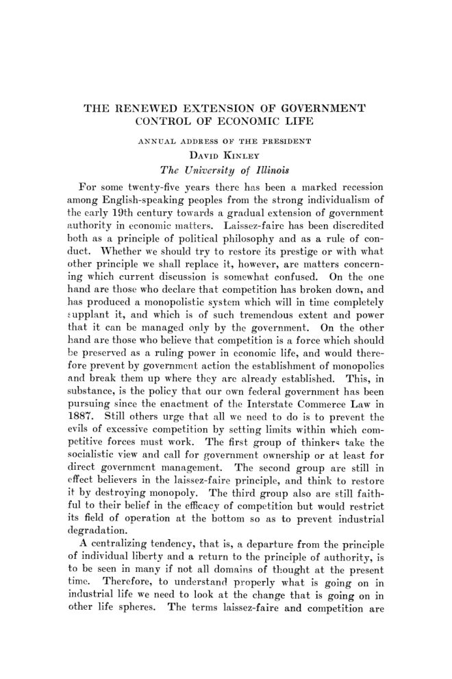

Kinley, 1913: o pêndulo entre concorrência e autoridade
Leitura: 8 min
No discurso presidencial de 1913, Kinley aceita que o laissez-faire perdeu prestígio, mas pergunta quais controles do governo promovem o bem-estar e quais apenas trocam um mal por outro.


David Kinley abriu seu discurso presidencial com um diagnóstico de época. Havia cerca de vinte e cinco anos, disse, os povos de língua inglesa vinham recuando do individualismo forte do início do século XIX em direção a uma extensão gradual da autoridade do governo sobre a economia. O laissez-faire estava desacreditado como princípio de filosofia política e como regra de conduta. O que pôr no lugar, porém, era assunto de um debate confuso.
Kinley separou as posições em três grupos. Os primeiros diziam que a concorrência quebrara e produzira um sistema de monopólios que só o governo poderia administrar: era a visão socialista. Os segundos queriam preservar a concorrência, impedindo e desfazendo monopólios por ação do governo, política que o governo federal seguia desde a Lei do Comércio Interestadual de 1887. Os terceiros aceitavam a concorrência, mas queriam limitar seu campo por baixo, para evitar a degradação industrial.
Por que o pêndulo voltava?
Para Kinley, o liberalismo econômico era mais que uma plataforma política: era um sistema de cultura, construído sobre a liberdade pessoal em religião e política. Por isso via a mesma tendência centralizadora em outras esferas, como o movimento pela unidade das igrejas, a extensão da autoridade do estado sobre a local na educação, o avanço do princípio federal na política e a censura mais ampla dos costumes.
A tese central é a de um pêndulo. Nunca houve regime sem alguma concorrência, salvo a escravidão, nem regime sem alguma regulação. Domina, em cada época, o princípio que melhor promove o bem-estar nas condições existentes de conhecimento e recursos. Quando um deles produz males em excesso, a ênfase se desloca. Era o que acontecia. Em muitos pontos, a concorrência teria degenerado de uma luta entre iguais na exploração do fraco pelo forte, e em vários ramos havia monopólio prático.
Kinley acrescenta duas causas. A primeira é jurídica: os tribunais deram à corporação moderna atributos de pessoa natural sem impor a ela as consequências da responsabilidade pessoal, o que tornava difícil alcançar os atos dos indivíduos por trás dela. A segunda é demográfica. A ocupação do continente encerrava quatro séculos de oportunidade excepcional abertos pela descoberta da América, e a demanda por regulação seria um reconhecimento inconsciente de que o país chegara a uma fase de rendimentos relativamente decrescentes.
Ainda assim, Kinley não quer abandonar o sistema. A concorrência promovera iniciativa, riqueza e conhecimento, e nenhum substituto serviria ao bem-estar sem oferecer outros motivos para os mesmos resultados.
“A concorrência foi uma força de desenvolvimento, mesmo que tenha falhado um pouco como força de controle.” (“Competition has been a developing force, even if it has failed somewhat as a controlling one.”)
Quais propostas estavam na mesa?
Kinley examina seis linhas de ação: legislação social de bem-estar; regulação dos salários, sobretudo por um salário mínimo geral; regulação dos preços de produtos de indústrias monopolistas; determinação, pelo governo, da forma e do tamanho das empresas; supervisão e publicidade dos métodos dos grandes negócios; e definição mais clara do direito da sociedade sobre as grandes acumulações de propriedade, pela tributação ou por outros meios.
Por que o salário mínimo o preocupava?
Kinley distingue dois casos. Onde o salário é baixo por exploração, nas indústrias de suor ou onde há lucro de monopólio, só haveria uma opinião sobre a conveniência de um mínimo. O erro seria impor o mínimo a todas as indústrias, ou num valor acima do que o trabalhador produz, ou sem reajuste constante. Se o mínimo superar o produto dos trabalhadores marginais, diz, eles serão postos fora do trabalho, a menos que o padrão de vida melhor eleve sua eficiência ou que o novo custo estimule novos métodos.
O argumento segue pelo lado do capital. Um mínimo não ganho na margem reduziria lucros e juros, afetaria a acumulação e o investimento e, com o tempo, o emprego. Kinley lê a lei britânica do salário mínimo dos mineiros como uma nova ética de distribuição: não mais a cada um o que produz, mas a cada um o que precisa, num patamar mínimo. Se generalizada, eliminaria quem não alcança o mínimo e elevaria a margem até que o produto do trabalho igualasse o salário legal, o que seria uma volta à teoria da produtividade específica.
A fixação de preços pelo governo, fora dos casos de monopólio ou acordo, enfrentaria objeções parecidas. O governo não teria como conhecer de antemão custos e mercados que mudam dia a dia nem como prever a concorrência estrangeira. Kinley vê na situação das ferrovias americanas uma boa ilustração dos possíveis efeitos.
Onde a intervenção lhe parecia justificada?
Na forma e no tamanho das empresas. Indústrias monopolistas por natureza, como os serviços públicos, já eram, por consenso, objeto de supervisão. Fora delas, o objetivo deveria ser criar condições para uma concorrência saudável. Kinley lista práticas que poderiam ser proibidas, como diretorias entrelaçadas, diluição do capital, abatimentos, discriminação de preços e a posse de ações de uma corporação por outra.
O governo deveria investigar qual é o tamanho eficiente de uma empresa. Kinley não considera provado que os trustes fossem mais eficientes e cita a dissolução do truste do tabaco, que teria devolvido à sociedade talento empresarial antes sufocado por tarefas burocráticas. Mesmo que a maior empresa tivesse o menor custo unitário, isso não bastaria: só se pode tolerar o sistema que não ameace a liberdade política nem a oportunidade econômica. Justifica também um limite ao tamanho financeiro das empresas, porque um retorno justo sobre capital excessivo exigiria preços acima do valor do serviço.
Mas a supervisão burocrática, adverte, não substitui padrões de retidão nas relações entre os homens. Pode-se ter um funcionalismo honesto e eficiente que ponha o bem comum acima dos interesses privados, mas não por muito tempo. A fraqueza da regulação extensa seria a falta de motivo para aproveitar novas condições; a força da iniciativa individual, a presença desse motivo.
Que limites ele propôs?
Kinley fecha com uma lista. O governo pode estender a legislação de bem-estar; delimitar e regular os monopólios naturais; continuar obrigando os trustes a se dissolver em unidades de tamanho eficiente, depois de investigar qual é esse tamanho; dar a máxima publicidade às transações das corporações, sem as investigações minuciosas que algumas comissões propunham; proibir acordos de preços; fixar salário mínimo onde o trabalho é obviamente explorado; e aumentar os encargos sobre as grandes fortunas de origem marcadamente social. Os tribunais deveriam rever sua atitude e fixar a responsabilidade pessoal dos diretores pelos atos da corporação.
O aviso final é político. Uma vez reconhecido o direito do governo de regular as condições econômicas, as classes dominantes o empurrariam a regular os direitos dos outros. Privilégios econômicos que se cristalizam em lei em favor de alguns impõem deveres a outros, e o resultado seria uma lenta cristalização do status econômico.
“A regulação da vida industrial em favor de alguns significa a repressão das atividades de outros.” (“Regulation of industrial life in behalf of some means repression of the activities of some others.”)
Kinley resume o movimento como uma tentativa de estabelecer pela autoridade as condições de bem-estar do individualismo, que a ação individual não conseguira alcançar, com ênfase nos direitos da comunidade sobre a propriedade privada e menos nos do proprietário.
Na minha leitura
Na minha leitura, a força do discurso está no método: Kinley não pergunta se o governo deve intervir, mas qual intervenção resiste a uma análise de incidência. O caso do salário mínimo é o mais claro. Ele separa o salário baixo por exploração, que um mínimo corrige sem perda de emprego, do salário baixo por baixa produtividade, em que o mínimo desloca a margem e desemprega. É a distinção que a literatura posterior faria entre mercados com poder de compra do empregador e mercados competitivos.
A parte sobre o tamanho das empresas é mais ambígua. Kinley pede ao governo que descubra o tamanho eficiente, mas admite que o critério do custo unitário não basta e acrescenta a liberdade política e a oportunidade econômica. Fica sem resposta como medir esses outros fins, e a tensão entre eficiência e dispersão do poder econômico atravessa o texto sem ser resolvida.
Glossário
- Laissez-faire
- doutrina de que o governo deve interferir o mínimo possível na atividade econômica.
- Liberalismo econômico
- para Kinley, o sistema baseado na liberdade pessoal e na concorrência, do qual o laissez-faire é uma expressão.
- Trabalhador marginal
- o trabalhador de menor produto entre os empregados; na teoria da produtividade, seu produto fixa o salário.
- Produtividade específica
- teoria de que cada fator recebe o que acrescenta ao produto.
- Diretorias entrelaçadas (interlocking directories)
- presença das mesmas pessoas nas diretorias de empresas concorrentes ou relacionadas.
- Holding
- empresa cuja função principal é deter ações de outras empresas e controlá-las.
- Rendimentos decrescentes
- princípio de que, a partir de certo ponto, acréscimos de um fator rendem acréscimos cada vez menores de produto.
Fontes
- The Renewed Extension of Government Control of Economic Life: Annual Address of the President — David Kinley, University of Illinois (pp. 3–17). JSTOR · Internet Archive (PDF)
- Edição completa, com os demais artigos: Nº 129 do Arquivo.
Documento em domínio público (EUA, publicado antes de 1931), via JSTOR Early Journal Content e Internet Archive. Resumo e comentário do autor deste site, sem afiliação com a American Economic Association. Encontrou um erro? Escreva: a correção é publicada no próprio texto, com data.
↑ Nº 129 · Minneapolis, 1913: até onde o governo deve controlar a economia Gray, 1913: o círculo vicioso da avaliação das empresas reguladas →